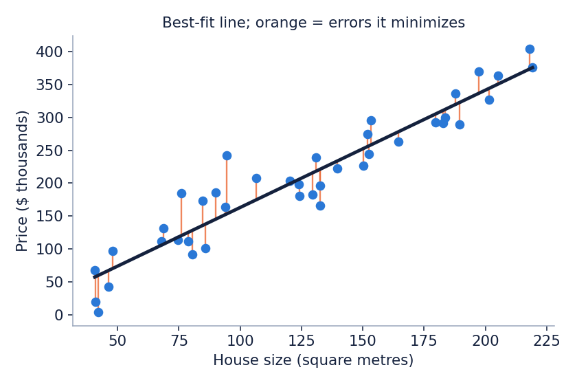

SupervisedTabular Data
Linear Regression
Linear Regression predicts a number by fitting a straight line (or a flat plane when there are several inputs) through the training examples.
How it works
- Write the model as price = b0 + b1 x size, where b0 is the starting value and b1 is how much the price rises for each extra square metre.
- For any choice of b0 and b1, measure the error of every house: the gap between its real price and the line (the orange segments).
- Square those errors and add them up. Pick the b0 and b1 that make this total as small as possible. This is called least squares.
- To predict a new house, put its size into the line.
Real-world use: Predicting house prices from size, location score and age. The same idea is used for sales forecasts and energy demand.
Strength: it is fast and easy to explain, because each coefficient says how much one input matters. Limit: it only sees straight line patterns and one extreme outlier can pull the line off.
